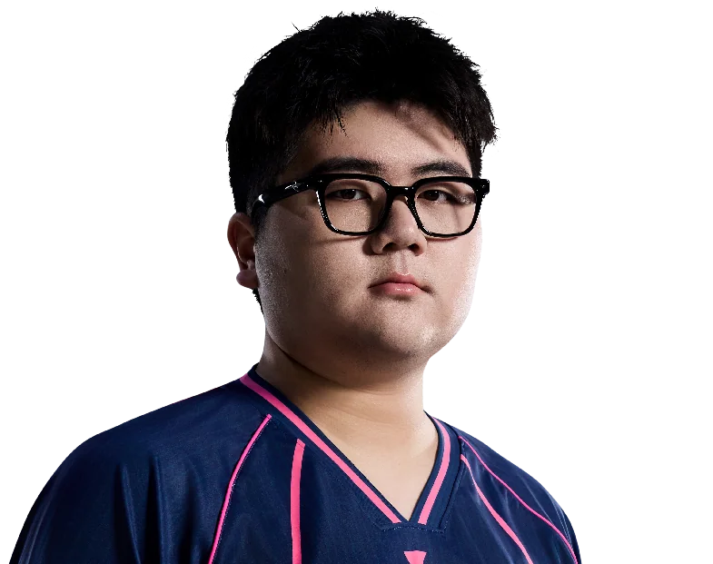

Bilibili Gaming / 王晓杰
rushia.
ALL IN. EVERY ROUND.Omenrushia / 王晓杰
rushia / BLG
ONE NAME.EVERY ROUND.ALL IN.
王晓杰，Bilibili Gaming。
从每次选下英雄，到每次站上赛场。
rushia / 赛场影像MOMENTS
MOMENTS
THAT MATTER.
rushia.
Bilibili Gaming
每一瞬间，都是比赛的一部分。
Riot Games / 官方赛场影像
rushia / 职业英雄池
DIFFERENT AGENTS.
SAME PLAYER.
从最熟悉的英雄，看到每一种打法。幽影
Omen.
33% 全英雄使用占比
69职业出场地图
176.5平均战斗评分 ACS
0.87击杀 / 死亡 K:D
867总击杀
80首杀
VLR 全时期职业数据 · 2026-11-02 快照 · 出场单位为地图，使用占比不是胜率。查看原始统计 ↗
rushia / 比赛记录ONE PLAYER.
ONE PLAYER.
EVERY ROUND.
212职业地图
3,006总击杀
0.97全英雄 K/D
VCT 26: CN Stage 2 Playoffs ⋅
LBF
BLG / TYL0 : 3+
VCT 26: CN Stage 2 Playoffs ⋅
UBF
BLG / JDG0 : 2+
VCT 26: CN Stage 2 Playoffs ⋅
UBSF
BLG / XLG2 : 1+
VCT 26: CN Stage 2 Playoffs ⋅
UBQF
BLG / TE2 : 1+
VCT 26: CN Stage 2 Group Stage ⋅
Seeding
BLG / NOVA0 : 2+
最近已收录系列赛；生涯总计由全英雄表求和，K/D 为总击杀除以总死亡。

下一位 / BLG 阵容